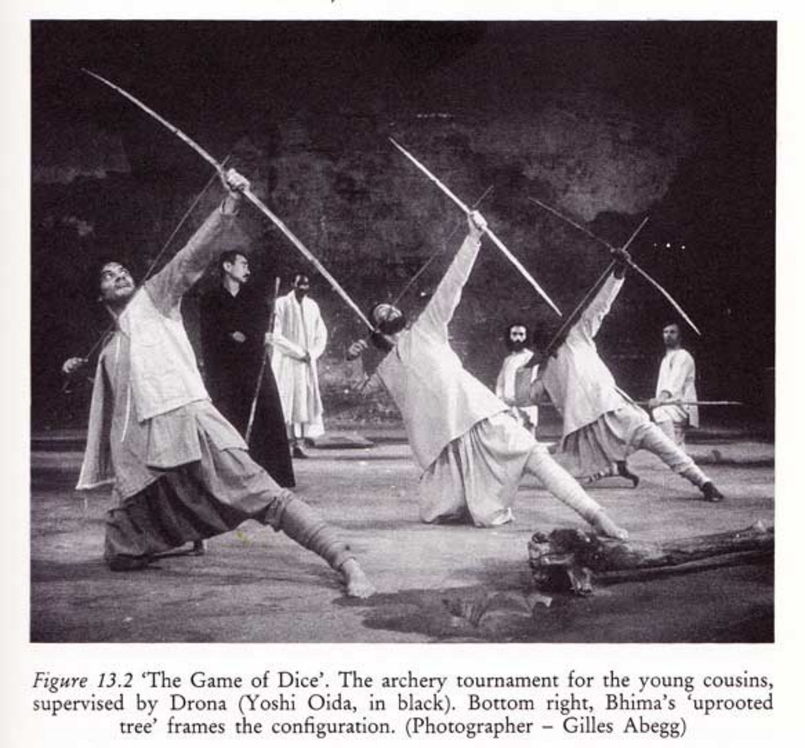
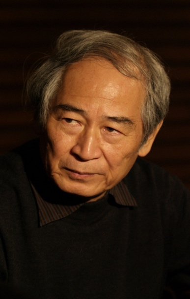
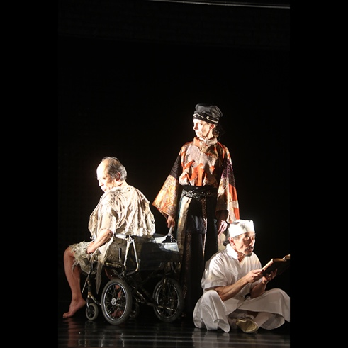

“Hybridization has become part of an ongoing trend in cultural production… Hybridization, however, is not merely the mixing, blending and synthesizing of different elements [to] ultimately form a culturally faceless whole. In the course of hybridization, cultures often generate new forms and make new connections with one another.” (Wang and Yeh, 2005, p.175)
Do you agree or disagree with Wang’s and Yeh’s statement? Give your reasons and choose 2 or 3 examples of hybridized products and/or practices that support your position.
With the progress of human civilization, globalization is regarded as an inevitable international exchange, which covers politics, race, economy, culture, ideology and other aspects (Hassi and Storti,2011), and it is a process of multi-dimensional development (Prasad,2006). This multi-dimensional development will lead to cultural hybridization, and the process of cultural integration will create new forms and new connections (Wang and Yeh, 2005). This paper will focus on the field of drama, where hybridization is very common and representative, because when plays from one cultural background are presented by theatrical artists from another culture, there will always be something new and with special vitality. This paper will first analyze how drama develops in the context of hybridization and then examines two specific examples of drama: Peter Brook's cross-cultural drama Mahabharata (1985) and Tadashi Suzuki’s King Lear (2016).
Once culture comes into being, its communication is inevitable (Ji, 2001). However, the cultural barrier is very weak, and local cultures can be shaped by other more powerful cultures and even global cultures (Ritzer,2010).This somehow helps accelerate the process of western modernization in those less advanced areas, but the local cultures that do hinder the process tend to shrink and decline (Li, 1999). Some scholars view this as a loss of unique cultural identity (Schiller,1976). With the rise of the industrial revolution, human beings can create cultural products, and cultural and financial exchanges between countries became more and more frequent (Hassi and Storti,2011). By the end of the 18th century, cultural unification (Weber,1905) became a more popular concept in Europe. This kind of cultural unification is called ‘cultural homogenization’ (Tomlinson,1949) by some scholars. This school believes that the contact, integration and reference between different cultures make people tend to be relatively similar in entertainment, clothing, and even ways of thinking and behaviour (Prasad,2006). ‘Global culture’ (Robertson,1992) is expressed in a European and American-centric way.
Although these views hold that cultural globalization is becoming more and more consistent, different scholars believe that globalization does not mean that a strong culture engulfs a weak culture and leads to cultural homogenization. On the contrary, globalization makes people aware of the differences between cultures and makes individuals consciously seek their own cultural identity (Tomlinson,2003). Therefore, instead of weakening national culture, globalization plays a role in strengthening national cultural consciousness (Xu,2014). It can be seen as a process of cultural localization and hybridization, in which cultures constantly interact and explain each other to form a mixed cultural form (Masafumi,2008). ‘Cultural mixing is not only a mixture of different elements, thus creating a whole without cultural faces, but in the process of mixing, various cultures usually produce new situations and new connections’ (Wang and Yeh,2005). In other words, Wang and yeh believe that globalization and hybridization is causing heterogeneity.
This cultural heterogeneity is particularly obvious in the field of drama. The heterogeneity of drama is also known as ‘cross-cultural drama’ (Richard,1982). It is defined as a hybrid form (Pavis,1996) created by consciously mixing performing traditions from different cultural regions. The most important feature of this kind of drama is the absorption and integration of different performing cultural elements (He, 2009 P44). The evolution of drama is a gradual process, with both inheritance and innovation and change (Li,1999 P3). Erika Fischer-Lichte (one of the earliest western scholars involved in the study of cross-cultural drama) believes that the differences between cultures are not fixed or impossible to change but are constantly changing. Artists from different cultures work together, and in their close cooperation, a new style of performance has emerged (Erika,2009). Different drama traditions have deep interaction and give birth to innovative stage forms in this new style of performance. The following two specific examples of drama illustrate that new changes and new exchanges will occur in the process of the cultural mixture, which is a kind of cultural innovation and artistic reconstruction.
Figure 1: Peter Brooke (credit: Geoffrey Heptonstall, March 31, 2016)

Figure 2: Peter Brook and the Mahabharata: Critical Perspectives. (Credit: Williams, D. ed. 1992)
Peter Brooke (see Figure 1) said in his book Empty Space that all forms must die, all forms must be recreated, and new creations will naturally receive the influence around them and leave their imprints in drama (Brooke,2019). It can be said that Brooke is the director who created new dramatic images. Brooke's epic masterpiece The Mahabharata (see Figure 2, 1992) embodies his distinct cross-cultural characteristics, which are mainly reflected in three aspects: the first is the composition and performance of actors. Actors were from different cultural backgrounds with different nationality and races, and the performance did not deliberately imitate Indian actors but retained the movement habits of each country. The second is stage design, clothing, stage property, music and so on. In these fields, Brooke pursues symbolism and hint, seeking a kind of integration and innovation in Indian style and global style. The third is Brooke's comprehensive use of dramatic techniques (Brecht, Meyerhead, Aalto, Grotovsky). For example, Brooke used Brecht alienation to unify the structural elements, dramatic characteristics and philosophical elements of the epic through the main narrative methods (Deng, 2019). It can be said that Brooke does not want to explain oriental culture (Zhao,2003) as a westerner, he wants to grasp the universal state of human existence and the authenticity of human experience through long epics. Some scholars have different opinions on Brooke's adaptation. Baruka regards his behaviour as a ‘misappropriation of Indian culture’(Bharucha,1988) and Hiltebeitel believes that Brooke's simplification is a deletion of Indian culture and does not really understand the ‘reincarnation’ and ‘theological system’ of Indian culture (Hiltebeitel,1992). He even breaks away from the Indian context, separates the epic from its world and cultural traditions, and turns India's inner culture into an empty shell (Dasgupta,1987). Although there are so many criticisms and arguments, it is undeniable that Peter Brooke's adaptation of The Mahabharata is a bold attempt and shows that creators in different cultural backgrounds that have different cognitive models and values (Hu,2015, p.20). It is a mysterious exploration of origin (Pavis,1996) and is one of the representative works of cross-cultural drama.

Figure 3: Tadashi Suzuki (credit: SCOT,2009)
The purpose of Peter Brooke's cross-cultural drama is not only to construct a new drama form through images, but also to understand the common source of culture and drama form. However, the Japanese drama master Tadashi Suzuki (see Figure 3) uses a unique style and original actor training system in his attempt of cross-cultural drama to reinterpret the performance elements of western drama and reshape the stage language. The system is called ‘Suzuki training method’. It integrates Japanese traditional elements into western drama and demonstrate those elements through the actor's movement and their body language. ‘Culture exists in the body, the body shows culture’ (Suzuki, 2017 P83). His works have both the form of western realism and the lyrical beauty of oriental freehand brushwork, and boldly adapt the original works. He feels that his plays are speculations and imaginations of the human spiritual world, focusing on the expression of the human mind and ideology (Suzuki, 2017). In King Lear(see Figure 4), he created Shakespeare's original works for the second time, expressing that ‘the world is a hospital’ and that everyone may be the theme of King Lear. He broke through the limitations of the times and set the time and space of King Lear in a mental hospital in modern society. He believed that ‘the tragedy of King Lear's loneliness and madness should not be limited to that particular dynasty with far away time and space but should span the time and country. It is closely related to every elder’ (Suzuki, 2017, p.150). This bold and creative adaptation embodies different cultural forms and different views. We see not only the modern interpretation of ancient tragedies and the interpretation of western classics by oriental dramatists, but also a kind of thinking and expression of the ultimate proposition (Sheng,2017) that knows no national boundaries, belongs to all mankind and is the deepest level of human nature. The heterogeneity of Tadashi Suzuki's interpretation of the new King Lear is shown not only in the overlap of the two worlds (the real world and the fantasy world) and the actors’ body expression but also in the stage design. He used the wooden sliding door of traditional Japanese style as the link between the two worlds. The specific performance is as follows: when the actor walks from behind the wooden sliding door to the stage, it symbolizes that the character enters the fantasy world from daily life. The old man in the play (Lear) is a patient in a mental hospital behind the wooden door, and in front of the wooden door is the rebellious, manic and tyrannical King Lear in Shakespeare's play. This realistic absurdity shows the distinct characteristics of Suzuki, that is, transcending time and space, transcending different nations, surpassing the actors themselves, and facing the theme of absurdity of life. We can regard Suzuki's version of King Lear as a classic mixture of western plays and traditional Japanese art， so that they can be presented to the audience in a heterogeneous state.

Figure 4: King Lear (Credit: Theatre Olympics,2006)
This paper has taken a look at how globalization can influence cultures and points out that no matter how more advanced cultures like western modernization change other countries’ local cultures, the exchange of different cultures always leads to the creation of new cultural forms, instead of letting the more advanced ones simply replace the original cultures. It then examined two examples of cross-cultural dramas, in which drama artists found or created the possibility of integrating different cultural elements to explore and construct new dramas. It has attempted to prove Wang and Yeh's point of view and pointed out that cultural heterogeneity and the mixture of different cultures can be an important source of imagination and creation.
References
Amine, K. and Carlson, M., 2008. Al-halqa in Arabic Theatre: An Emerging Site of Hybridity. Theatre Journal, 60(1), pp.71-85.
Bharucha, Rustom. Peter Brook's ‘Mahabharata’: A View from India. Economic and Political Weekly, vol. 23, no. 32, 1988, pp. 1642–1647., www.jstor.org/stable/4378860.
Baorong Gong. From Hamlet to the Prince's Vengeance-- A case of Cross-cultural Drama [J]. Dramatic Art, 2012 (02): 71-75.
Chengzhou He. The theoretical issues of Cross-cultural Drama-- an interview with Erica Fisher-Richter [J]. Dramatic Art, 2010 (06): 84-91.
Chengzhou He. The Future of gender Studies-- an interview with Tori Moy [J]. Contemporary Foreign Literature, 2009. 30 (02): 155-161.
Chengzhou He. Globalization and cross-cultural drama. Nanjing University Press, 2012
Dasgupta, Gautam. ‘The Mahabharata’: Peter Brook's ‘Orientalism.’ Performing Arts Journal, vol. 10, no. 3, 1987, pp. 9–16. JSTOR, www.jstor.org/stable/3245448.
David Edward Coley. Projected performances: the phenomenology of hybrid theater bin Saipul Bahri, F. F. (2015). Jebat: Exploring Cultural Hybridization in Theatre Performance (Unpublished master's thesis). University of Calgary, Calgary, AB. doi:10.11575/PRISM/26691
Dilight. (2009) Suzuki Tadashi. [online] Available from: https://www.scot-suzukicompany.com/en/profile.php
En.wikipedia.org. 2020. Economy and Society. [online] Available at: <https://en.wikipedia.org/wiki/Economy_and_Society> [Accessed 20 August 2020].
Geoffrey Heptonstall, (2016) The theatre of Peter Brook. The Global Dispatches. Available from: http://www.theglobaldispatches.com/articles/the-theater-of-peter-brook
Hiltebeitel, Alf. Transmitting ‘Mahabharatas’: Another Look at Peter Brook. TDR (1988-), vol. 36, no. 3, 1992, pp. 131–159. JSTOR, www.jstor.org/stable/1146239.
Herbert I.Schiller,M.E. Sharpe, 1976. Communication and Cultural Domination.
Hassi and Giovanna Storti (August 22nd, 2012). Globalization and Culture: The Three H Scenarios, Globalization - Approaches to Diversity, Hector Cuadra-Montiel, Intech Open, DOI: 10.5772/45655.
Hu Bin, a study on the cross-cultural adaptation of modern Chinese drama. Beijing: people's Publishing House. 2015.12 ISBN 978-7-01-015601-9
Huiwen Zhang. The difference of drama theory between China and the West in view of cultural difference. Drama series 2013.
Junyu Liu. ‘seeking differences in similarities’ and ‘seeking similarities in differences’: the post-cultural logic of cultural policies in China and Europe from a macro-historical perspective [J]. China Cultural Industry Review, 2015 Ji 21 (01): 93-117
Lirong Shen. Tadashi Suzuki's creative adaptation of King Lear [J]. Drama Literature, 2017 (09): 59-64.
Lina Liu. Tadashi Suzuki’s ‘a paradise of drama’ — from the perspective of Suzuki s training method and the master s view of drama in King Lear. Theoretical and practical study of Art: a collection of essays by Central Academy of Drama. Part 3: All 2 volumes edited by the Central Academy of Drama. Foshan, BEIJING: Chinese Theatre Publishing House. June 6,2017.
Luke Amadi，Globalization and the changing liberal international order: A review of the literature.2019
Muchen Zou. Fictional body and fictional body-- on Tadashi Suzuki's dramatic view [J]. Dramatic Art, 2020 (02): 141149.
Nabil A Ahmed, Masafumi Miyatake, AK Al-Othman, Hybrid solar photovoltaic/wind turbine energy generation system with voltage-based maximum power point tracking, Received 11 Jan 2008, pp.43-60.
NAUMANN M. A Dialogue of Cultures[J]. Frank- furt am Main,2000(3):54-69.
Prasad, A., & Prasad, P. (2006). Global transitions: The emerging new world order and its implications for business and management, Business Renaissance Quarterly, 1(3):91- 113.
Prasad, A., & Prasad, P. (2007). Mix, Flux and Flows: The Globalization of Culture and its Implications for Management and Organizations, The Journal of Global Business Issues 1 (2):11-20.
Pieterse, J. N. (1996). Globalization and Culture: Three Paradigms, Economic and Political Weekly, 31 (23):1389-1393.
PAVIS P. 'Introduction: Towards a Theory of Interculturalism in Theatre?' [M]//PAVIS P. Introduction performance reader. London: Routledge,1996:8
Peter Brook. Translated by Stanislaw Baranczak. The Empty Space, China Drama Publishing House 2006.
Qiu Xu. The study of Cultural trend in the context of Cultural Globalization: review and Prospect [J]. Journal of Anhui Agricultural University (Social Science Edition), 2014 Ji 23 (05): 136-140.
Ritzer, G. (2010). Globalization: A Basic Text, Wiley-Blackwell, West Sussex, UK.
Robertson, R. (1992). Globalization: Social Theory and Global Culture, Sage Publications, London.
Shuliao Li. ‘Culture is the body’-- Tadashi Suzuki's plays and transcendental dramas [J]. Reading, 2020 (05): 169176.
SAGE Journals. 2020. Globalization, Neo-Globalization and Post-Globalization: The Challenge Of Populism And The Return Of The National - Terry Flew, 2020. [online] Available at :<https://journals.sagepub.com/doi/full/10.1177/1742766519900329> [Accessed 20 August 2020].
The exchange and mutual influence between Chinese and Western drama. Theoretical and practical study of Art: a collection of essays by Central Academy of Drama. Part 3: All 2 volumes edited by the Central Academy of Drama. Foshan, BEIJING: Chinese Theatre Publishing House. June 6,2017.
Werbner, P. (1997) ‘Introduction: The Dialectics of Cultural Hybridity’, in P. Werbner and T. Modood (eds) Debating Cultural Hybridity, pp. 1- 28. London: Zed Books.
Williams, D. ed. (1992) Peter Brook and the Mahabharata: Critical Perspectives. Available from: https://thegreatindianperformance.wordpress.com/category/performance/
Wang, G. and Yeh, E. Y. (2005) ‘Globalization and hybridization in cultural products: The cases of Mulan and Crouching Tiger, Hidden Dragon’，International Journal of Cultural Studiespp,8(2), pp. 175-193.doi:10.1177/1367877905052416.
Weber, M. (1921/1968). Economy and Society, Totowa, New Jersey.
Xianlin Ji. The Theory of Cultural complementarity between the East and the West. Beijing Daily, 2001.9.24.
Zengdao Li. A history of Western theatre by university press. 1999.
Xiaoling Deng. Peter Brooke and the Storm [J]. Drama (Journal of the Central Academy of Drama), 2010 (02): 124,135.
Xiaoling Deng. A Study of Peter Brook’s Stage Practice. Xiamen University Press.2019.7
Xinjun Duan. CROSS-CULTURAL THEATRE: Adaptation and representation. University Press 2009.
Yanli Liang. Cross-cultural Drama in the context of Globalization [J]. Drama (Journal of the Central Academy of Drama), 2008 (03): 88-101.
Yuanjiang Zou. A study on the defamiliarization of Chinese and Western drama aesthetics, People's Publishing House, 2009
Yi Xin. An anthropological investigation of the origin and evolution of drama. Dramatic literature, 1990(02): 80.
Zhao Zhiyong. The temptation of the East? Comment on Mahabharata directed by Peter Brook, Drama No. 2, No. 108, Journal of the Central Academy of Drama, 2003.